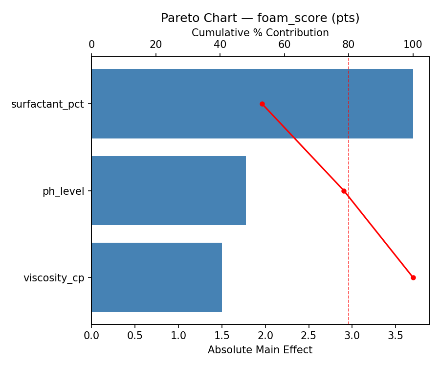
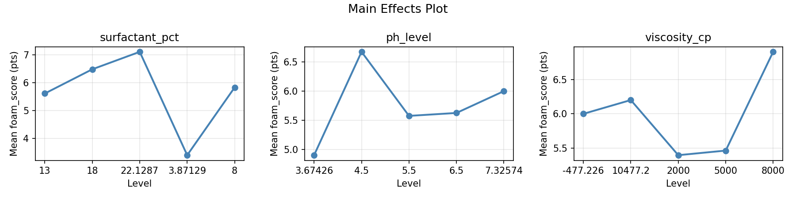
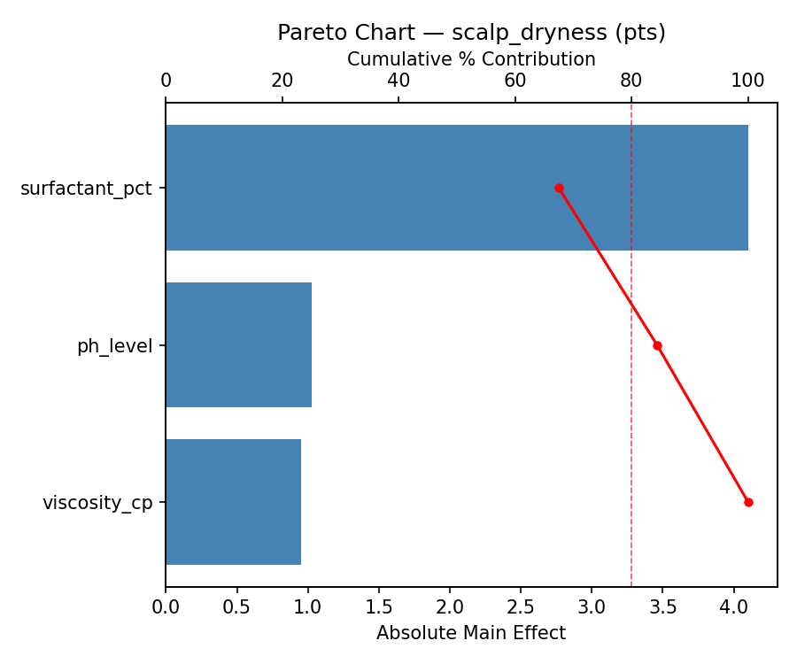
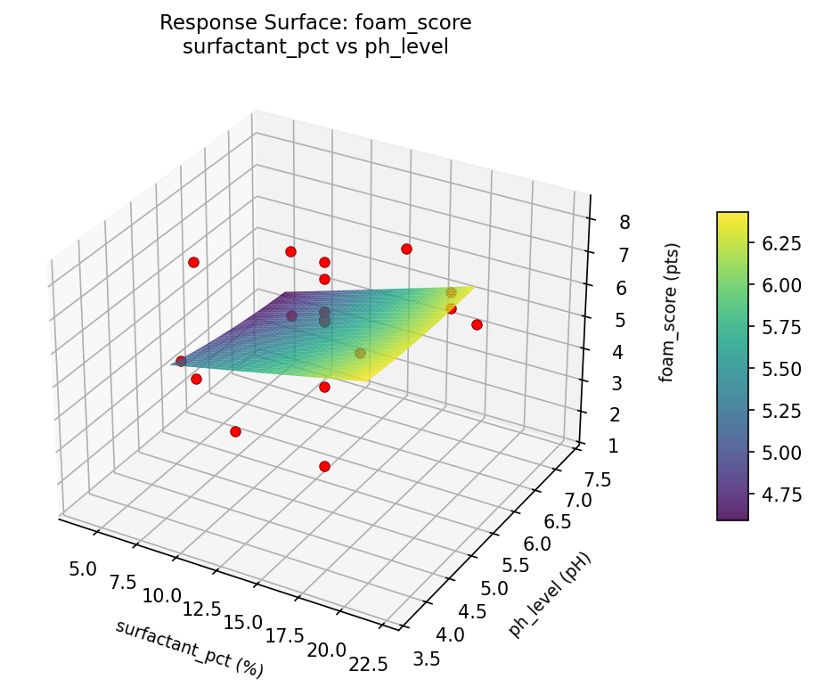
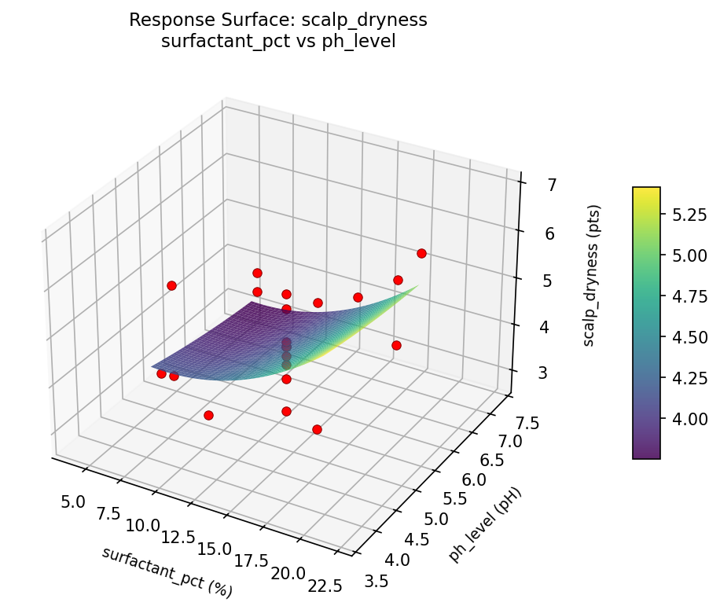
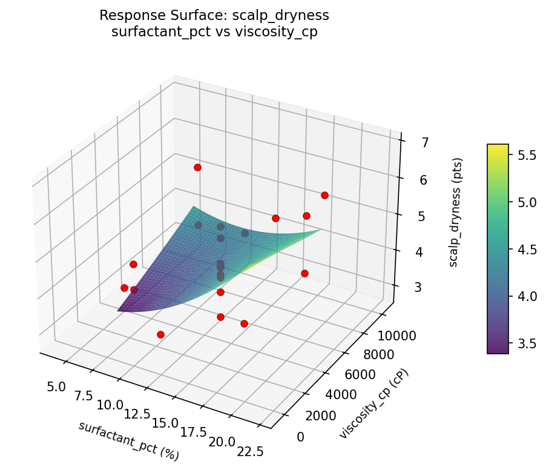

Summary
This experiment investigates shampoo foaming & cleansing. Central composite design to maximize foam volume and cleansing power while minimizing scalp dryness by tuning surfactant blend, pH, and viscosity.
The design varies 3 factors: surfactant pct (%), ranging from 8 to 18, ph level (pH), ranging from 4.5 to 6.5, and viscosity cp (cP), ranging from 2000 to 8000. The goal is to optimize 2 responses: foam score (pts) (maximize) and scalp dryness (pts) (minimize). Fixed conditions held constant across all runs include fragrance = floral, preservative = phenoxyethanol.
A Central Composite Design (CCD) was selected to fit a full quadratic response surface model, including curvature and interaction effects. With 3 factors this produces 22 runs including center points and axial (star) points that extend beyond the factorial range.
Quadratic response surface models were fitted to capture potential curvature and factor interactions. The RSM contour plots below visualize how pairs of factors jointly affect each response.
Key Findings
For foam score, the most influential factors were surfactant pct (53.0%), ph level (25.4%), viscosity cp (21.5%). The best observed value was 8.2 (at surfactant pct = 8, ph level = 6.5, viscosity cp = 2000).
For scalp dryness, the most influential factors were surfactant pct (67.5%), ph level (16.9%), viscosity cp (15.6%). The best observed value was 2.8 (at surfactant pct = 22.1287, ph level = 5.5, viscosity cp = 5000).
Recommended Next Steps
- Run confirmation experiments at the predicted optimal settings to validate the model.
- Consider whether any fixed factors should be varied in a future study.
Experimental Setup
Factors
| Factor | Low | High | Unit |
|---|
surfactant_pct | 8 | 18 | % |
ph_level | 4.5 | 6.5 | pH |
viscosity_cp | 2000 | 8000 | cP |
Fixed: fragrance = floral, preservative = phenoxyethanol
Responses
| Response | Direction | Unit |
|---|
foam_score | ↑ maximize | pts |
scalp_dryness | ↓ minimize | pts |
Configuration
{
"metadata": {
"name": "Shampoo Foaming & Cleansing",
"description": "Central composite design to maximize foam volume and cleansing power while minimizing scalp dryness by tuning surfactant blend, pH, and viscosity"
},
"factors": [
{
"name": "surfactant_pct",
"levels": [
"8",
"18"
],
"type": "continuous",
"unit": "%"
},
{
"name": "ph_level",
"levels": [
"4.5",
"6.5"
],
"type": "continuous",
"unit": "pH"
},
{
"name": "viscosity_cp",
"levels": [
"2000",
"8000"
],
"type": "continuous",
"unit": "cP"
}
],
"fixed_factors": {
"fragrance": "floral",
"preservative": "phenoxyethanol"
},
"responses": [
{
"name": "foam_score",
"optimize": "maximize",
"unit": "pts"
},
{
"name": "scalp_dryness",
"optimize": "minimize",
"unit": "pts"
}
],
"settings": {
"operation": "central_composite",
"test_script": "use_cases/220_shampoo_foam/sim.sh"
}
}
Experimental Matrix
The Central Composite Design produces 22 runs. Each row is one experiment with specific factor settings.
| Run | surfactant_pct | ph_level | viscosity_cp |
|---|
| 1 | 13 | 5.5 | 5000 |
| 2 | 18 | 4.5 | 8000 |
| 3 | 8 | 6.5 | 2000 |
| 4 | 13 | 7.32574 | 5000 |
| 5 | 13 | 5.5 | 5000 |
| 6 | 3.87129 | 5.5 | 5000 |
| 7 | 13 | 5.5 | -477.226 |
| 8 | 13 | 5.5 | 5000 |
| 9 | 18 | 6.5 | 2000 |
| 10 | 22.1287 | 5.5 | 5000 |
| 11 | 13 | 5.5 | 5000 |
| 12 | 13 | 3.67426 | 5000 |
| 13 | 13 | 5.5 | 5000 |
| 14 | 8 | 4.5 | 8000 |
| 15 | 13 | 5.5 | 5000 |
| 16 | 18 | 4.5 | 2000 |
| 17 | 13 | 5.5 | 10477.2 |
| 18 | 18 | 6.5 | 8000 |
| 19 | 13 | 5.5 | 5000 |
| 20 | 8 | 4.5 | 2000 |
| 21 | 8 | 6.5 | 8000 |
| 22 | 13 | 5.5 | 5000 |
Step-by-Step Workflow
1
Preview the design
$ python doe.py info --config use_cases/220_shampoo_foam/config.json
2
Generate the runner script
$ python doe.py generate --config use_cases/220_shampoo_foam/config.json \
--output use_cases/220_shampoo_foam/results/run.sh --seed 42
3
Execute the experiments
$ bash use_cases/220_shampoo_foam/results/run.sh
4
Analyze results
$ python doe.py analyze --config use_cases/220_shampoo_foam/config.json
5
Get optimization recommendations
$ python doe.py optimize --config use_cases/220_shampoo_foam/config.json
6
Generate the HTML report
$ python doe.py report --config use_cases/220_shampoo_foam/config.json \
--output use_cases/220_shampoo_foam/results/report.html
Features Exercised
| Feature | Value |
|---|
| Design type | central_composite |
| Factor types | continuous (all 3) |
| Arg style | double-dash |
| Responses | 2 (foam_score ↑, scalp_dryness ↓) |
| Total runs | 22 |
Analysis Results
Generated from actual experiment runs using the DOE Helper Tool.
Response: foam_score
Top factors: surfactant_pct (53.0%), ph_level (25.4%), viscosity_cp (21.5%).
Pareto Chart

Main Effects Plot

Response: scalp_dryness
Top factors: surfactant_pct (67.5%), ph_level (16.9%), viscosity_cp (15.6%).
Pareto Chart

Main Effects Plot

Response Surface Plots
3D surfaces fitted with quadratic RSM. Red dots are observed data points.
foam score ph level vs viscosity cp

foam score surfactant pct vs ph level

foam score surfactant pct vs viscosity cp

scalp dryness ph level vs viscosity cp

scalp dryness surfactant pct vs ph level

scalp dryness surfactant pct vs viscosity cp

Full Analysis Output
RSM surface: rsm_foam_score_surfactant_pct_vs_ph_level.png
RSM surface: rsm_foam_score_surfactant_pct_vs_viscosity_cp.png
RSM surface: rsm_foam_score_ph_level_vs_viscosity_cp.png
RSM surface: rsm_scalp_dryness_surfactant_pct_vs_ph_level.png
RSM surface: rsm_scalp_dryness_surfactant_pct_vs_viscosity_cp.png
RSM surface: rsm_scalp_dryness_ph_level_vs_viscosity_cp.png
=== Main Effects: foam_score ===
Factor Effect Std Error % Contribution
--------------------------------------------------------------
surfactant_pct 3.7000 0.3277 53.0%
ph_level 1.7750 0.3277 25.4%
viscosity_cp 1.5000 0.3277 21.5%
=== Summary Statistics: foam_score ===
surfactant_pct:
Level N Mean Std Min Max
------------------------------------------------------------
13 12 5.6083 1.6340 1.4000 7.7000
18 4 6.4750 0.5315 5.8000 6.9000
22.1287 1 7.1000 0.0000 7.1000 7.1000
3.87129 1 3.4000 0.0000 3.4000 3.4000
8 4 5.8250 1.7970 4.2000 8.2000
ph_level:
Level N Mean Std Min Max
------------------------------------------------------------
3.67426 1 4.9000 0.0000 4.9000 4.9000
4.5 4 6.6750 1.4523 4.7000 8.2000
5.5 12 5.5750 1.8041 1.4000 7.7000
6.5 4 5.6250 0.9743 4.2000 6.3000
7.32574 1 6.0000 0.0000 6.0000 6.0000
viscosity_cp:
Level N Mean Std Min Max
------------------------------------------------------------
-477.226 1 6.0000 0.0000 6.0000 6.0000
10477.2 1 6.2000 0.0000 6.2000 6.2000
2000 4 5.4000 1.2028 4.2000 6.9000
5000 12 5.4667 1.8022 1.4000 7.7000
8000 4 6.9000 0.9201 6.2000 8.2000
=== Main Effects: scalp_dryness ===
Factor Effect Std Error % Contribution
--------------------------------------------------------------
surfactant_pct 4.1000 0.2169 67.5%
ph_level 1.0250 0.2169 16.9%
viscosity_cp 0.9500 0.2169 15.6%
=== Summary Statistics: scalp_dryness ===
surfactant_pct:
Level N Mean Std Min Max
------------------------------------------------------------
13 12 4.1167 0.6408 2.8000 5.3000
18 4 4.8000 1.2275 3.7000 6.3000
22.1287 1 6.9000 0.0000 6.9000 6.9000
3.87129 1 2.8000 0.0000 2.8000 2.8000
8 4 4.6250 0.8342 3.9000 5.8000
ph_level:
Level N Mean Std Min Max
------------------------------------------------------------
3.67426 1 4.2000 0.0000 4.2000 4.2000
4.5 4 4.9250 1.3175 3.7000 6.3000
5.5 12 4.2500 1.1172 2.8000 6.9000
6.5 4 4.5000 0.6055 3.9000 5.3000
7.32574 1 3.9000 0.0000 3.9000 3.9000
viscosity_cp:
Level N Mean Std Min Max
------------------------------------------------------------
-477.226 1 3.8000 0.0000 3.8000 3.8000
10477.2 1 4.2000 0.0000 4.2000 4.2000
2000 4 4.6750 1.1325 3.9000 6.3000
5000 12 4.2583 1.1139 2.8000 6.9000
8000 4 4.7500 0.9678 3.7000 5.8000
Pareto chart (foam_score): use_cases/220_shampoo_foam/results/analysis/pareto_foam_score.png
Pareto chart (scalp_dryness): use_cases/220_shampoo_foam/results/analysis/pareto_scalp_dryness.png
Main effects (foam_score): use_cases/220_shampoo_foam/results/analysis/main_effects_foam_score.png
Main effects (scalp_dryness): use_cases/220_shampoo_foam/results/analysis/main_effects_scalp_dryness.png
Optimization Recommendations
=== Optimization: foam_score ===
Direction: maximize
Best observed run: #2
surfactant_pct = 8
ph_level = 6.5
viscosity_cp = 2000
Value: 8.2
RSM Model (linear, R² = 0.1696, Adj R² = 0.0312):
Coefficients:
intercept +5.7727
surfactant_pct -0.5258
ph_level +0.2045
viscosity_cp -0.5051
RSM Model (quadratic, R² = 0.4621, Adj R² = 0.0587):
Coefficients:
intercept +5.2648
surfactant_pct -0.5258
ph_level +0.2045
viscosity_cp -0.5051
surfactant_pct*ph_level -0.9500
surfactant_pct*viscosity_cp -0.2500
ph_level*viscosity_cp -0.2000
surfactant_pct^2 -0.0411
ph_level^2 +0.3189
viscosity_cp^2 +0.4839
Curvature analysis:
viscosity_cp coef=+0.4839 convex (has a minimum)
ph_level coef=+0.3189 convex (has a minimum)
surfactant_pct coef=-0.0411 negligible curvature
Notable interactions:
surfactant_pct*ph_level coef=-0.9500 (antagonistic)
Predicted optimum (from quadratic model):
surfactant_pct = 8
ph_level = 6.5
viscosity_cp = 2000
Predicted value: 8.1622
Model quality: Weak fit — consider adding center points or using a different design.
Factor importance:
1. surfactant_pct (effect: 3.2, contribution: 51.0%)
2. viscosity_cp (effect: 1.8, contribution: 28.6%)
3. ph_level (effect: 1.3, contribution: 20.4%)
=== Optimization: scalp_dryness ===
Direction: minimize
Best observed run: #3
surfactant_pct = 22.1287
ph_level = 5.5
viscosity_cp = 5000
Value: 2.8
RSM Model (linear, R² = 0.3430, Adj R² = 0.2335):
Coefficients:
intercept +4.4000
surfactant_pct -0.3038
ph_level -0.0762
viscosity_cp -0.6405
RSM Model (quadratic, R² = 0.8238, Adj R² = 0.6917):
Coefficients:
intercept +4.4224
surfactant_pct -0.3038
ph_level -0.0762
viscosity_cp -0.6405
surfactant_pct*ph_level -0.8375
surfactant_pct*viscosity_cp -0.2375
ph_level*viscosity_cp +0.0875
surfactant_pct^2 -0.2412
ph_level^2 -0.1362
viscosity_cp^2 +0.3438
Curvature analysis:
viscosity_cp coef=+0.3438 convex (has a minimum)
surfactant_pct coef=-0.2412 concave (has a maximum)
ph_level coef=-0.1362 concave (has a maximum)
Notable interactions:
surfactant_pct*ph_level coef=-0.8375 (antagonistic)
Predicted optimum (from quadratic model):
surfactant_pct = 13
ph_level = 5.5
viscosity_cp = -477.226
Predicted value: 6.7379
Model quality: Good fit — general trends are captured, some noise remains.
Factor importance:
1. viscosity_cp (effect: 2.9, contribution: 51.3%)
2. surfactant_pct (effect: 1.9, contribution: 33.8%)
3. ph_level (effect: 0.9, contribution: 14.9%)